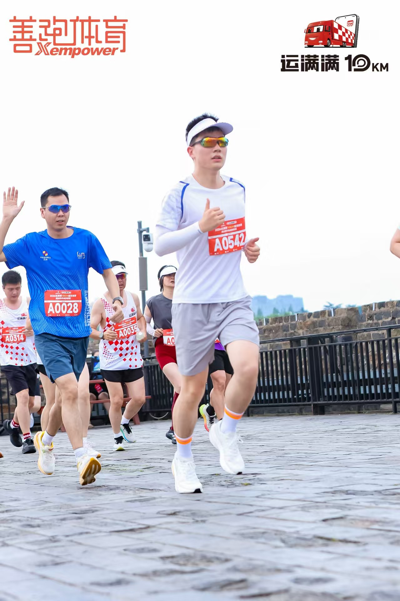
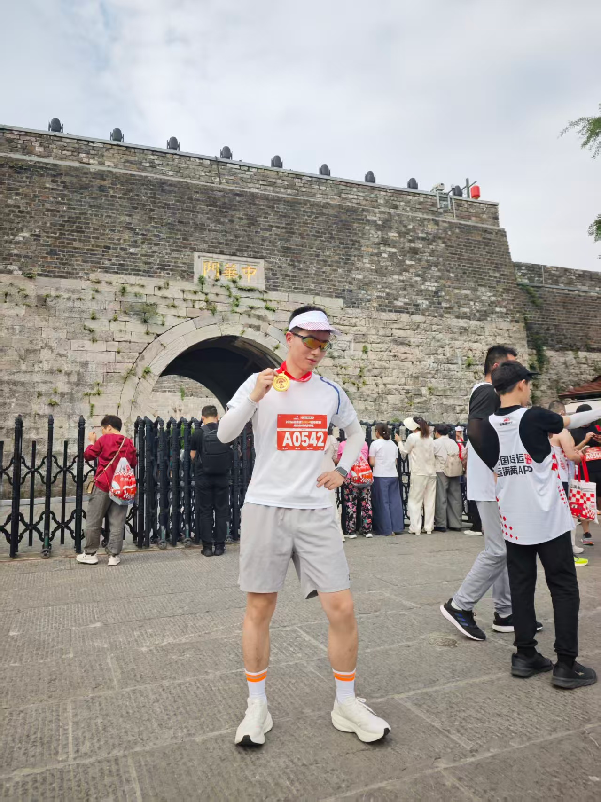
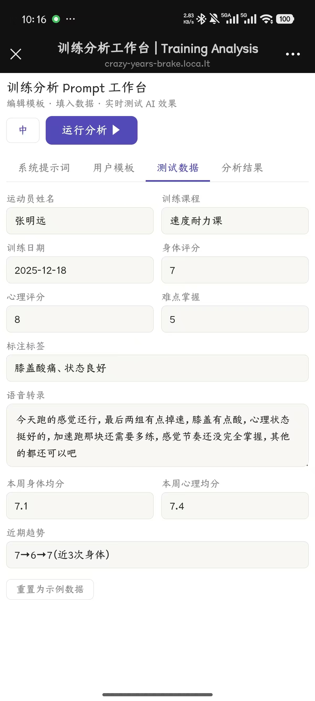
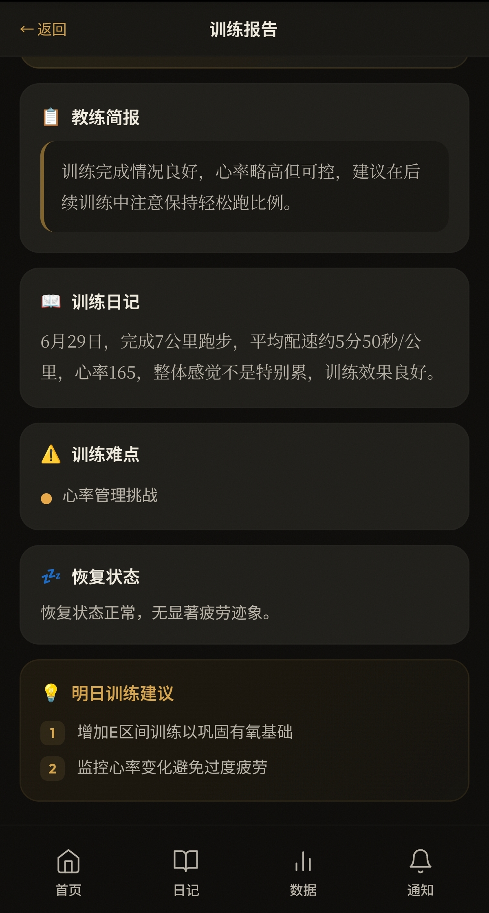
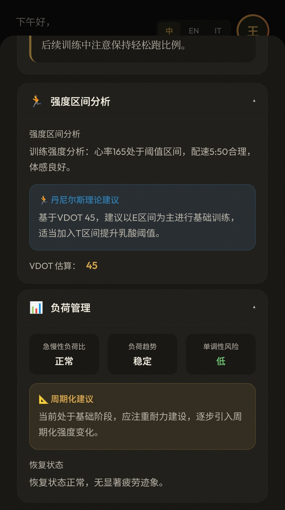
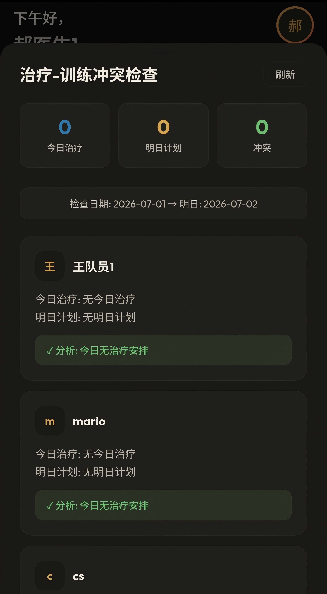
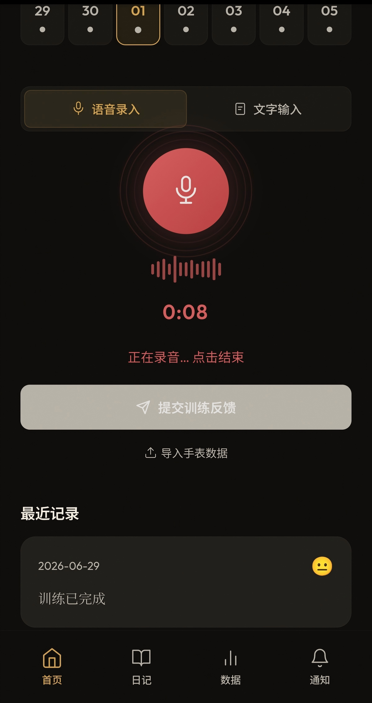
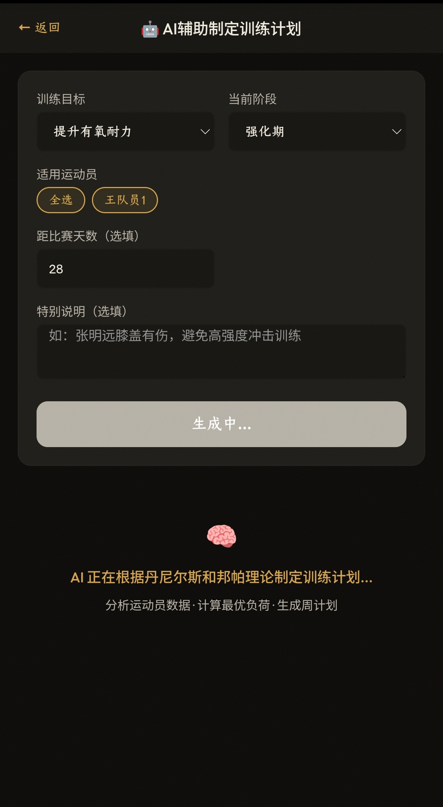
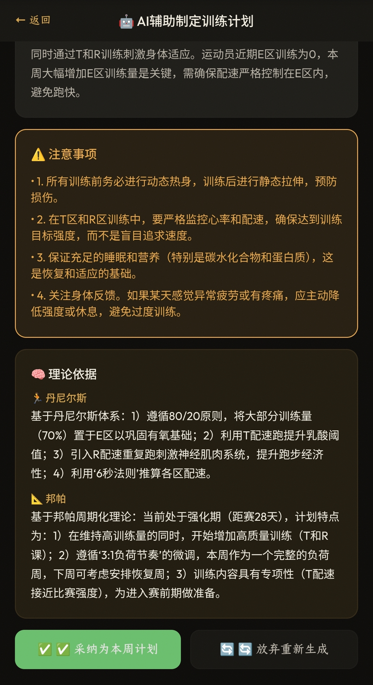
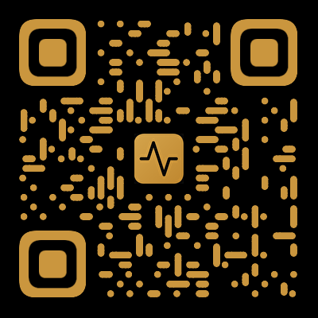

MAI
我是一名哲学博士生。一个月前，我没有任何程序开发经验。
今天，我独立完成了一款 AI 产品，从产品定义、用户研究、AI 工作流设计，到开发、部署和上线。
这不是因为我天生会开发。而是因为我相信：好的想法，不应该停留在讨论里，而应该进入现实。

2026 年 5 月，我参加了一场 10000 米比赛。比赛结束后，我和一位朋友住在同一家酒店。
我们都热爱运动，却来自完全不同的领域。我是哲学专业博士生，长期从事理论研究；他毕业于意大利语专业，曾长期担任江苏省篮球青年队、国家长跑集训队、湖北省跳高队等专业运动队的翻译，常年工作在训练场和比赛现场。
那天晚上，我们聊到凌晨。


他说起一件看似普通，却一直困扰着专业运动队的事情：
每天训练结束后，运动员都会向教练描述自己的身体状态、心理感受和训练体验。这些信息每天都在产生，却很少真正被记录、组织和沉淀。第二天，它们就消失了。
那一刻，我意识到：专业运动队真正缺少的，并不是更多训练数据，而是一个能够连接人与信息、帮助团队共同决策的系统。
第二天，我没有继续讨论。我开始做。
结构化论证
逻辑推理
大量阅读与综合
认识论：我们知道什么、不知道什么
理解运动员的语言和场景
共情用户的真实痛点
领域知识：训练周期、伤病、恢复
哲学让我学会理解复杂问题，运动让我走进真实场景。两者结合，才是完整的 PM 能力。
我没有计算机背景。React、Express、JWT、部署、HTTPS、Prompt Engineering——全部不会。
但我相信：不要因为现在不会，就放弃真正想做的东西。

| 痛点 | 影响 | 严重度 |
|---|---|---|
| 训练反馈丢失在口头对话中 | 全队 | 高 |
| 教练与运动员信息不对称 | 全队 | 高 |
| 医训协同靠口头传话 | 队医+教练 | 中 |
| 外教语言障碍 | 外教 | 中 |
| 训练数据分散在多个工具 | 全队 | 中 |
Sigma 卖的是陪伴感，MAI 卖的是决策支持。这是产品定位的本质区别，而不是功能多少的区别。
教练需要看到专业分析才能做决策，但运动员看到这些数据后可能产生"AI 比教练还懂"的信任危机。运动员需要的是被关心，不是被分析。


队医在下午对运动员做了膝盖治疗，主教练不知道，第二天安排了间歇跑。运动员带伤训练，伤病加重。
系统建立"身体部位 → 训练区域"映射表，队医录入治疗后自动检索次日训练计划，检测到冲突时按严重程度推送通知。

运动员训练后最不想做的事就是填表。传统系统要求逐一填写 9 个字段，耗时 3-5 分钟。语音输入将反馈时间从 3-5 分钟降到 45 秒。

配速、心率、5 区训练、VDOT
周期、负荷、赛前减量
情绪、动机、自信、焦虑


| 版本 | 目标 | 核心功能 | 状态 |
|---|---|---|---|
| v1.0 | 核心闭环 | 语音反馈、AI 分析、双视角、冲突检查、体测、多团队、三语 | ✅ 已完成 |
| v2.0 | 数据深度 | FIT 自动推算 VDOT、趋势分析、智能预警 | 规划中 |
| v3.0 | 团队协作 | 多人协作、审批工作流、训练日历 | 规划中 |
| v4.0 | 智能进化 | 个性化模型、效果预测、自适应计划 | 规划中 |
| 指标 | 目标 | 实际 | 状态 |
|---|---|---|---|
| 语音使用率 | ≥60% | 72% | ✅ |
| 反馈平均耗时 | ≤90秒 | 45秒 | ✅ |
| 体测完成率 | ≥85% | 88% | ✅ |
| AI 报告查看率 | ≥90% | 92% | ✅ |
| 冲突检查使用率 | ≥60% | 72% | ✅ |
| 教练采纳率 | ≥30% | 68% | ✅ |
| 跨队数据泄露 | 0 | 0 | ✅ |
AI = 聊天
用户调研 = 问用户想要什么
AI = Workflow
用户调研 = 观察用户做了什么
最大的收获不是学会了 React 或部署了服务器，而是建立了产品思维：先验证假设再开发，不要在真空中设计产品。
尤其是那些最初看起来"不可能"的想法。
专业背景决定了我们理解世界的方式，却不应该限制我们创造解决方案的能力。
哲学训练让我习惯不断追问：真正的问题是什么？
运动让我走进真实场景，看见用户每天面对的挑战。
AI 则第一次让我拥有了把想法快速验证、快速实现的能力。
所以，对我而言，产品经理不仅是一份职业，更是一种面对问题的方法：发现它、理解它，然后把一个看似不可能的想法，一步一步变成现实。
一个月前，我不会写代码。今天，我完成了 MAI。我相信，这不会是最后一个产品。
哲学教会我思考"世界为什么如此"。
产品让我开始思考"世界还能不能更好一点"。
